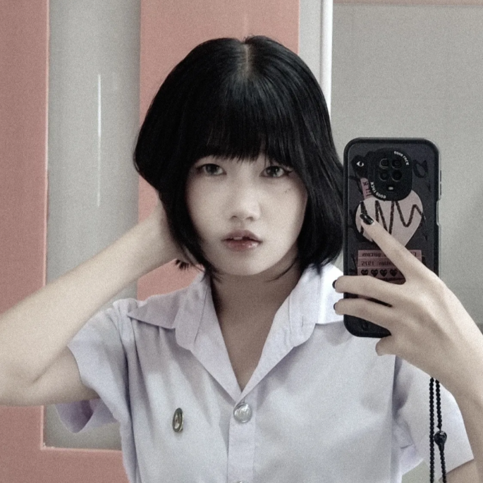
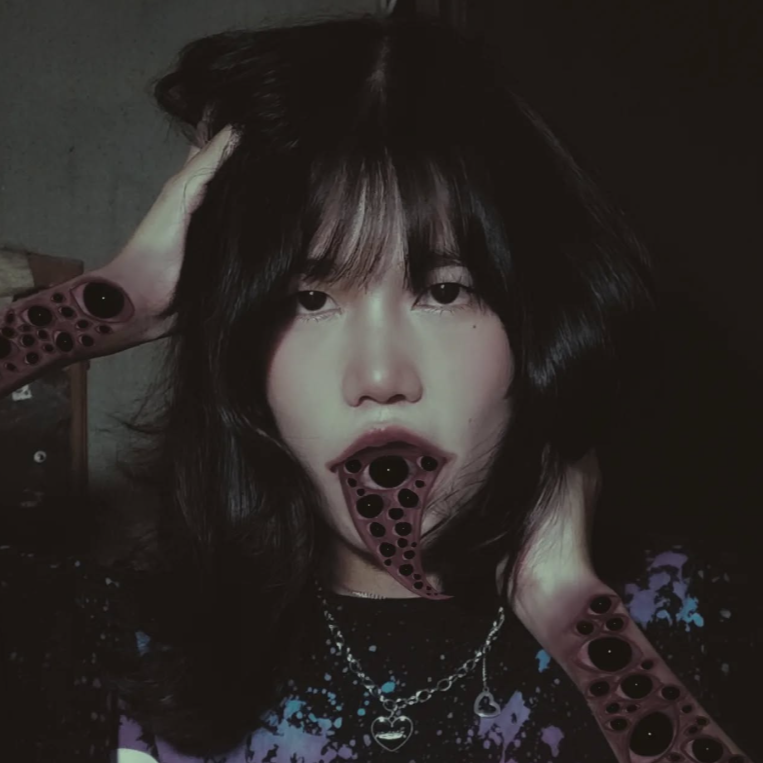
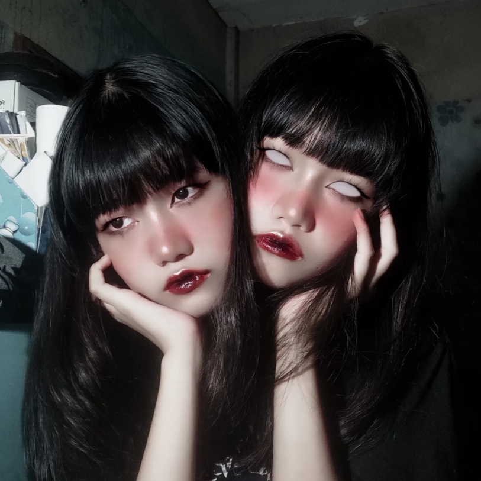
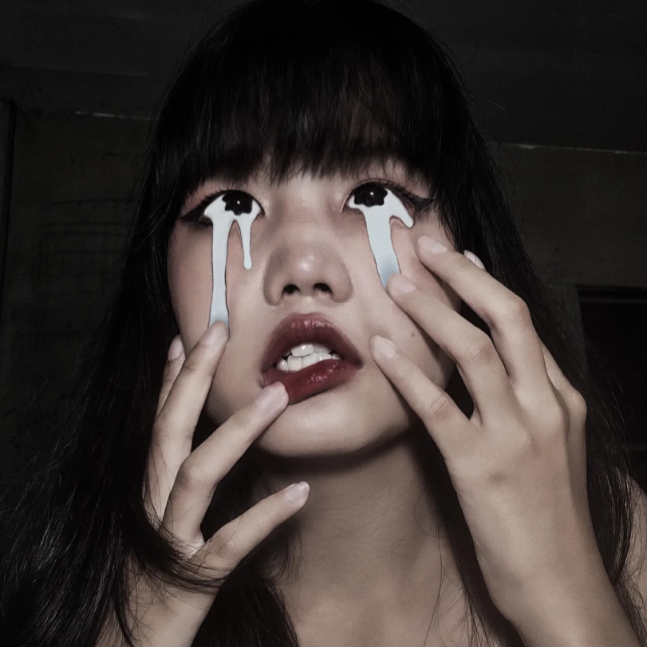

งานอดิเรกที่นานๆฉันจะทำสักทีคือการตัดต่อภาพ
Chat friend
หวัดดี! ทำไรอยู่เหรอ?
เล่นมายคราฟอยู่ มีไร

¡Hi, I'm Chub-Chip!
@42.1kg
Hobby



Chat ChatGPT
แชท ช่วงนี้การบ้านเยอะมากเลย
ฟังแล้วรู้เลยว่าช่วงนี้ชิพน่าจะงานถาโถมจริง ๆ เลย 🥲
การบ้านเยอะมันไม่ได้แค่ใช้เวลา แต่มันกินพลังสมองกับพลังใจไปพร้อมกันด้วย โดยเฉพาะตอนที่ยังอยากทำให้ดีทุกชิ้นอีก
ขอถามนิดนึงนะ ตอนนี้มันเป็นแบบไหนมากกว่ากัน:
📚 งานหลายวิชามาพร้อมกัน
⏰ เดดไลน์ชนกัน
🧠 งานยาก / ต้องคิดเยอะ
😵 หรือรู้สึกเริ่มล้าแล้วแต่ยังหยุดไม่ได้
ถ้าชิพอยาก ระบายให้แชทฟังก็ได้เลยนะ หรือถ้าต้องการให้แชทช่วยจัดแผน “เอาตัวรอดช่วงงานล้น” แบบไม่ไหม้ก่อนส่งงาน แชทช่วยวางให้ได้ 👍
การบ้านเยอะมันไม่ได้แค่ใช้เวลา แต่มันกินพลังสมองกับพลังใจไปพร้อมกันด้วย โดยเฉพาะตอนที่ยังอยากทำให้ดีทุกชิ้นอีก
ขอถามนิดนึงนะ ตอนนี้มันเป็นแบบไหนมากกว่ากัน:
📚 งานหลายวิชามาพร้อมกัน
⏰ เดดไลน์ชนกัน
🧠 งานยาก / ต้องคิดเยอะ
😵 หรือรู้สึกเริ่มล้าแล้วแต่ยังหยุดไม่ได้
ถ้าชิพอยาก ระบายให้แชทฟังก็ได้เลยนะ หรือถ้าต้องการให้แชทช่วยจัดแผน “เอาตัวรอดช่วงงานล้น” แบบไม่ไหม้ก่อนส่งงาน แชทช่วยวางให้ได้ 👍